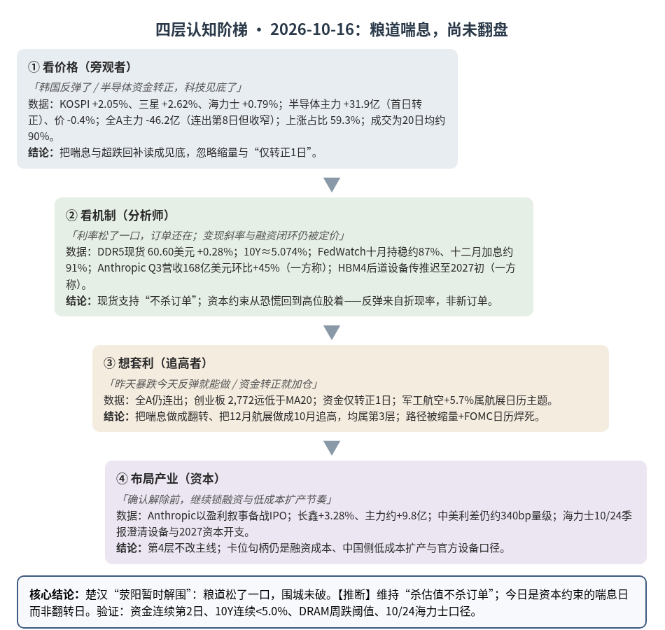
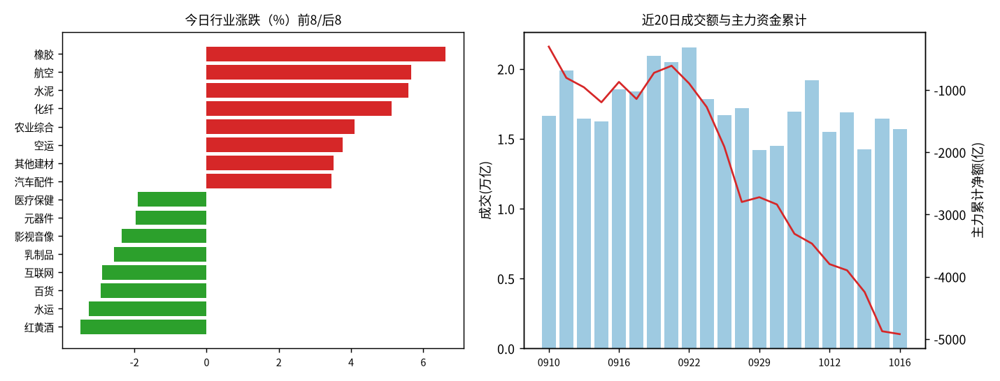
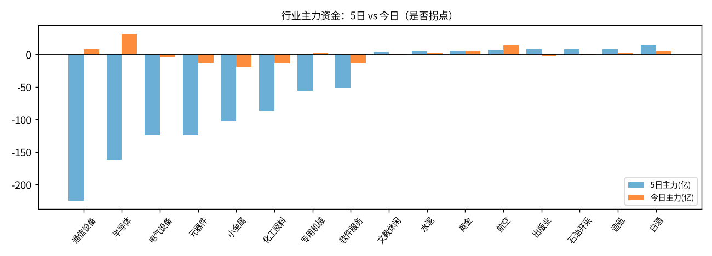

A股投研日报 · 2026-10-16（四层认知版）
昨日「杀估值不杀订单」的第一日验证读数落地——DDR5 现货续涨、10 年美债回落至约 5.07%、半导体主力首日转正 +31.9 亿、KOSPI 反弹止住七连跌——资本约束边际松了一口，但这是喘息而非翻转：PPI 仍热、FOMC 未落地、全 A 主力仍连出第 8 日且成交低于 20 日均，而存量资金切向航展催化的军工航空，说明增量未回、轮动仍在。
本报告为基于公开数据的研究分析，不构成投资建议。
今日市场概况
数据管道速览（Tushare 收盘数据，规则生成，正文判断见下文）
- 风险偏好偏弱，风格偏大盘/价值防御。 上证指数+0.24%收3,716.28，但盘中最深-0.71%（低点3,681.28），近5日上证50 -1.39%、创业板指 -8.90%、科创50 -6.77%，大小盘/成长价值剪刀差 6.4 个百分点。
- 资金面：全A主力（大单+特大单）今日净额 -46.2 亿，近21个交易日中17天为净流出，当前连续8天流出（今日流出额为近5日最小，抛压边际减弱）；成交 15,691 亿，较上日-4.7%，但低于20日均值 17,349 亿。
- 主线变化：此前领涨的通信设备、半导体、电气设备近5日合计主力净流出 -511 亿，是本轮调整的主要卖压来源；今日涨幅居前的橡胶、航空、水泥资金体量有限（合计 +18.1 亿）。【推断】当前更像“高位科技去拥挤 + 低位题材轮动”，而非新一轮趋势行情，反弹的持续性需要成交回到 2.0 万亿以上来确认。
变化点
方法：四层认知阶梯 + 历史周期律（
cognitive-ladder.md/references/cases.md）。市场数据来自 Tushare Pro（见附录）；产业/宏观数据附来源链接；推断=本文判断；“一方称”=未经独立核验的单方说法；“推算”=本文用公开数字计算。不构成投资建议。
一、世界观定位（先问三句）
- 属于哪一阶段？三国鼎立→楚汉之争过渡带，今日是一个“楚汉喘息日”（无阶段切换信号）。
- 三国层（科技/产能）实物端继续未被证伪：DDR5 16Gb 现货均价 60.60 美元、较上日 +0.28%，DDR4 16Gb 持平 83.66 美元 源；台积电美国第二座晶圆厂完工、目标 2027Q3 投产（扩产正面信息，非断供）源。
- 楚汉层（金融）今日从“掐紧”切到“喘息”：10 年美债约 5.074%（较前一日回落）、2 年约 4.731% 源；但 9 月 PPI 同比 6.3%（预期约 5.5%，为 2022 年以来最大同比增幅之一）源，能源与战争溢价仍在给联储留加息弹药。
- 命中哪个历史原型？——沿用昨日“萧何转漕 + 彭越断粮道”，今日补一句：楚汉相持中「荥阳被围后的暂时解围」——粮道并未打通，只是围城压力松了一夜。
- 剥结构：利率从 5.3% 一带回落到约 5.07%，股权风险偏好修复，但通胀硬数据与 FOMC 日历未变——是压力缓解，不是结构改写推断。
- 为何优于另起新原型：昨日已定位到楚汉层的“战力 vs 粮道”背离；今日新信息是粮道侧出现可核验的边际松动（收益率、FedWatch），用同一原型的“喘息”阶段即可，无需换结构。
- 验差异：现代版“解围”来自 CTA 空头回补、避险买债与 10 月加息概率下调（一方称，见 OCBC/Nikkei 转述）源，不是联储正式转向；中国侧 10 年国债仍在约 1.65% 附近（昨日 1.6485%，今日精确中债登读数待补充），中美利差仍约 340bp 量级（推算）——资本成本不对称未消除。
- 领先指标指向？ 金融约束从“收紧”回到“高位胶着”：CME FedWatch 隐含 10/27–28 会议持稳概率约 87%，但 12 月加息概率仍约 91% 源。纪律：方向≠节奏。回退条件（同昨日，微调）：若 10 年美债连续 2 日收于 5.0% 以下且半导体/通信设备主力连续 2–3 日净流入，则“喘息”可升格为“资本约束边际放松”；若 DRAM 现货周跌 >3% 或 CSP 下调资本开支，则回退到“需求出问题”。
二、变化一（主变化）：科技链“资金首日转正 + 亚洲反弹”——验证“杀估值不杀订单”，但确认门槛未过
第1层 · 看价格
- 标志性话语：「韩国反弹了，昨天抄底的人赚了」「半导体资金转正，科技见底了」。
- 数据：
- 海外：KOSPI 收涨约 2.05%–2.1% 至约 5,668，终结七连跌；三星电子 +2.62% 收 215,500 韩元，SK 海力士 +0.79% 收 1,272,000 韩元（分别为 9 日、8 日来首次收涨）；外资主板净买约 3,428 亿韩元，个人与机构净卖 源源。
- A 股：半导体今日 -0.4%、主力 +31.9 亿（资金连续天数 +1，首日转正）；通信设备 -0.1%、主力 +7.9 亿（首日转正）；电气设备 +0.7% 但主力 -4.3 亿（价涨资背离）。全 A 主力 -46.2 亿（连续第 8 日流出，但额度为近 5 日最小，较昨日 -629.9 亿收窄约 93%，推算）；上涨占比 59.3%（昨日 7.7%）；成交 15,691 亿，约为 20 日均 17,349 亿的 90%（推算，Tushare 见附录）。创业板指 -0.39% 收 2,772.38，盘中低点约 2,744 再创 20 日新低后收回。
- 中国账本对照：长鑫科技（688825）今日 +3.28% 收 45.02 元，主力净流入约 9.77 亿元（Tushare daily/moneyflow）——相对海力士出现一日跑赢，但仅一日，不作趋势判断。
结论：第1层把“反弹 + 资金转正”直接读成见底；忽略了价格仍弱于资金、成交未回均值、全 A 仍在连出。
第2层 · 看机制
- 标志性话语：「利率松了一口，订单还在；但 AI 变现的斜率与融资闭环被重新定价——喘息来自折现率，不来自新订单」。
- 瓶颈推导（续昨日 TOC：晶圆/存储/电力/资本）：
- ①存储现货环（未破，继续支持“不杀订单”）：DDR5 16Gb 现货均价 60.60 美元（+0.28%），DDR4 16Gb 持平——股价七连跌后连续两日现货不跟跌 源。昨日验证点 1 的“周跌 >3% = 需求坏”阈值，目前周内仍为上涨/持平（待周末汇总）。
- ②资本环（边际松，未确认转向）：10 年美债约 5.074%（昨日盘中曾至 5.3% 一带后回落）；PPI 同比 6.3% 仍偏热，但市场将 10 月加息概率压至约 13%（持稳约 87%）源。含义：折现率从“恐慌区”回到“高位区”，足以触发空头回补与外资回流韩股，但不足以宣布资本瓶颈解除推断。
- ③变现/债务环（昨日暴跌的深层机制，今日仍悬着）：Anthropic 向潜在投资者披露 Q3 营收 168 亿美元、环比 +45%（Q1 47 亿→Q2 116 亿→Q3 168 亿），并称已实现盈利（一方称，投资者日转述）源——绝对额强，但 QoQ 增速较 Q2 的近三倍放缓（推算），被部分宏观笔记读作“增长斜率放缓、AI 债务叙事降温”的触发器（一方称）源。黄仁勋公开为 CoreWeave 财务健康辩护，正是因为市场在交易“圆形融资”（供应商投资+担保客户买芯片）能否闭环（一方称）源。
- ④HBM4 设备节奏（资本配置在产品间切换，非必然技术事故）：韩媒/行业源称 SK 海力士部分 HBM4 后道设备交付从 2026 下半年推迟至 2027 年初；解释分歧为“通用 DRAM 利润更好→资本倾斜”vs“后道良率/认证放缓”（均为一方称，公司未正式确认）；10/28 季报将澄清 2027 资本开支 源源。若主因是通用 DRAM 抢资本，则强化“价格高位下的产能再分配”；若主因是技术瓶颈，则先进封装/键合设备验证节奏放缓（与案例3同构）——待 10/28 确认，今日不作二选一。
- A 股传导：半导体+通信设备今日主力合计约 +39.8 亿，而昨日两者合计约 -163.6 亿——资金方向反转快于价格（半导体价仍跌）推断；元器件今日仍 -12.7 亿、连续 3 日流出，说明链条内部并非全面回流。
结论：机制层维持“需求（现货）未坏 + 资本约束从恐慌回到高位胶着”。今日反弹交易的是折现率喘息与超跌回补，不是新的资本开支上修推断。
第3层 · 想套利
- 标志性话语：「昨天暴跌今天反弹，短线能做」「资金转正了，加仓科技」。
- 想赌“见底反转”→发现：①全 A 主力仍连出第 8 日；②成交低于 20 日均约 10%；③创业板收盘仍远低于 MA20（2,772 vs 3,157）；④半导体/通信设备资金仅转正 1 日，规则引擎阈值本就是“连续 2–3 日”——把首日当确认 = 把领先信号的噪声当趋势推断。
- 想用“长鑫相对海力士跑赢”做份额迁移交易→今日相对差约 +2.5 个百分点（推算），但昨日验证点要求“未来 5 日累计跑赢 >10 个百分点”才升格——一日不够。
- 想抄海外存储→三星/海力士相对 10/2 高点仍分别约 -22%、深跌未修复（一方称）源；FOMC 与 12 月加息定价仍在。
结论：想把“喘息”做成“翻转”= 第3层。路径被「单日资金转正 + 缩量 + FOMC 日历」焊死。
第4层 · 布局产业
- 标志性话语：「在确认资本约束解除之前，继续锁融资、锁低成本扩产节奏；反弹窗口用来观察，不用来改主线」。
- 海外卖方融资卡位未撤：博通/英伟达对客户的贷款与担保结构仍在（见昨日）；今日新增的是 Anthropic 以盈利叙事为 IPO 铺路——这是买方侧“证明能还债”的卡位，与案例7“锁低成本长债”同构的另一面推断。
- 中国侧低成本资本继续不对称：长鑫主力今日回流约 9.8 亿、股价修复，但扩产逻辑仍取决于国资/大基金的年度节奏，不取决于本日 KOSPI 涨跌（见昨日机制）。
- 设备链观察点前移至 10/28：海力士 HBM4 后道设备延期若被季报确认为“资本在通用 DRAM 与 HBM 间再分配”，则高端键合/测试设备订单确认时点后移（格局描述，非个股建议）；若确认为技术瓶颈，则验证节点风险上升——两种情形下，第4层玩家都在等官方口径而非股价反弹。
结论：第4层不把一日反弹当卡位信号；卡位句柄仍是融资成本、扩产资本与 10/28 设备/资本开支口径。
检查清单应用：缺口性质 = 资本缺口仍是人为/政策缺口（联储路径、通胀粘性），今日边际放松可快速再收紧——继续左顾右盼。物理缺口（存储）现货未破，维持自然+人为混合。替代弹性 = 融资替代仍高（银行→供应商融资→私募→IPO）；需求端“更省算力模型”替代弹性待观察（Anthropic/开源模型效率，待补充量化）。领先 vs 滞后 = 领先：10 年美债、FedWatch、DRAM 现货、CSP 资本开支、半导体主力连续天数；滞后：台积电/存储厂季度营收、单日涨跌幅。
与案例库交叉验证（变化一）
| 案例 | 案例核心论点 | 今日数据 | 判定 |
|---|---|---|---|
| 案例7 字节296亿贷款（楚汉层） | 融资时机=alpha；利率决定谁能继续烧 | 10Y≈5.07%；Anthropic 以盈利叙事备战 IPO；CoreWeave 债务叙事未消 | 维持强化：资本仍是绑定约束，今日只是喘息 |
| 案例3 装片机/键合机 | 订单≠收入；设备节奏领先放量 | HBM4 后道设备交付传推迟至 2027 初（一方称）；10/28 季报澄清 | 方向强化，数据待官方确认 |
| 案例8 另类数据 | 过程领先结果 | DRAM 现货续涨 vs 股价反弹仍弱 | 强化：用现货区分需求与折现率 |
| 案例2 钾肥（人为缺口可反转） | 寡头控量可被新进入者填补 | 长鑫一日相对跑赢；扩产慢变量未改 | 待补充（需多日相对收益），不作判断 |
三、变化二：军工航空放量——事件催化下的存量腾挪，不是增量主线切换
第1层 · 看价格
- 标志性话语：「军工起飞了，主线切国防了」「航展行情来了」。
- 数据：航空今日 +5.7%、主力 +14.1 亿（首日转正），上涨家数占比约 98%（规则引擎）；水泥 +5.6%、白酒 +1.8% 等低位/防御同步活跃；通信设备/半导体价格仍弱。公开复盘称军工装备、飞行汽车、碳纤维等居前，元件/能源金属等居后 源。航空 ETF 富国盘中一度涨超 6%（媒体口径）源。
第2层 · 看机制
- 标志性话语：「这是日历事件 + 规划预期的共振，不是全球军费突然上台阶的当日冲击」。
- ①事件催化：第十六届珠海航展定于 2026/12/7–13，参展企业超 1,100 家，空军/海军多型新装备同台、“首展/首秀”约 10%，海军装备首次大规模参展 源。
- ②中期订单叙事（机构口径，一方称）：“十五五”开局收尾窗口、2025 末–2027 装备采购密集落地、军贸（中航工业出席阿塞拜疆/马拉喀什防务展）打开外需——浙商/申万等表述为“军贸+订单+反弹”三重催化（一方称）源源。
- ③商业航天脉冲：朱雀二号改进型等近期发射、卫星组网新闻密集（一方称，界面）源——属主题催化，与主机厂订单兑现节奏不是同一时间常数。
- ④资金结构：航空今日主力 +14.1 亿，显著小于昨日科技单日流出的量级；全市场成交仍低于 20 日均——推断这是存量资金从高拥挤科技切向事件催化板块的轮动，不是增量风险偏好抬升。
结论：机制是“航展日历 + 十五五/军贸预期”的主题共振；与变化一的资本约束主线并行，不互相否定推断。
第3层 · 想套利
- 标志性话语：「连板股启动，追军工」。
- 发现：催化窗口是 12 月航展，今日是预期交易的提前量；若次日资金不能延续（航空主力转负或涨幅回吐过半），则属一日游脉冲。对照昨日油气“资金转负即降级”的纪律。
结论：把 12 月事件做成 10 月短线追高 = 第3层；路径被「事件日未到 + 存量缩量」焊死的概率高推断。
第4层 · 布局产业
- 标志性话语：「真正的卡位在订单与军贸渠道，不在主题日的涨停板」。
- 格局上：主机厂与核心配套的订单储备、军贸渠道（北非等）属于中期第4层变量；商业航天的可复用火箭与卫星互联网属更长周期的标准/基建叙事（五阶段中偏“标准/国防”交界）。今日资金动作证明市场在用主题交易这些变量，尚未看到可核验的新增大额军贸合同公告（待补充）。
结论：第4层只记“十五五订单窗口 + 军贸”为年度观察项；不把今日涨幅当作确认。
检查清单应用：缺口性质 = 订单缺口若成立，偏政策/预算驱动的人为缺口（规划与采购节奏可调），需左顾右盼。替代弹性 = 军贸市场国别分散，单一航展不决定份额。领先 vs 滞后 = 领先：正式采购立项/进出口合同公告、主机厂季度收入；滞后：主题 ETF 单日涨幅、连板溢价。
与案例库交叉验证（变化二）
| 案例 | 案例核心论点 | 今日数据 | 判定 |
|---|---|---|---|
| 总纲 五霸/楚汉（军工/国防） | 争资源与金融决胜期国防权重上升 | 航展催化 + 十五五叙事；无新增大额合同公告 | 方向可并存，本日证据偏主题 |
| 案例5 厄尔尼诺 | 天气/事件是放大器，持续性看供需共振 | 航展是日历事件，需与订单兑现共振 | 方法论强化：事件≠趋势 |
| 案例9 宇树（筹码/情绪） | 情绪脉冲与基本面可严重背离 | 连板与 ETF 大涨并存成交缩量 | 提示风险：脉冲可快 |
四、昨日验证点回顾（10/15 → 10/16）
| # | 验证点 | 今日读数 | 判定 |
|---|---|---|---|
| 1 | DRAM 现货周跌 >3% = 需求坏 | DDR5 +0.28%、DDR4 持平；周内未跌 | 维持「杀估值不杀订单」 |
| 2 | 10Y 连续 <5.0% 且 FOMC 不加息 | 10Y≈5.07%，尚未连续低于 5.0%；FOMC 未至；10 月持稳概率约 87% | 部分靠近，未达标 |
| 3 | 通信/半导体主力连续 2 日转正且创业板收复 2,866 | 今日首日转正；创业板 2,772，未收复 | 触发观察，未确认 |
| 4 | 长鑫相对海力士 5 日跑赢 >10pct | 今日相对约 +2.5pct（一日） | 不足，继续观察 |
| 5 | 宽度修复：上涨占比 >30% | 59.3% | 命中宽度修复；但量能未回均值 |
| 6 | 量能 <1.77 万亿 = 存量 | 1.57 万亿 | 存量博弈延续 |
五、供应链风险敞口（人工复核版）
脚本版见
risk_section_20261016.md。口径为 GB300/NVL72 当量柜年化系统价值；Δ$ 为事件类型假设模板，仅用于排序，非预测。
- 基线：年化 EL $5.77B（约 ¥388 亿），VaR95 $21.73B；EL 第一节点仍为 Nittobo T-glass（福岛）$1.81B，第二为中际旭创光模块 $0.87B——本日无新的玻纤/光模块断供事件。
- 今日事件复核：脚本列出的 8 条多为台积电扩产/评级（capacity，正面）与“营收强劲、存储涨价”类标题；其中「台积电营收强劲…」被误标 shortage——剔除。SK 海力士 HBM4 设备延期为产能节奏调整新闻（一方称），Δ$ 模板未给出断供损失，不计入断供 Δ$。复核后今日有效断供 Δ$ ≈ 0。
- 供第2层使用：基线最紧节点仍是 Nittobo T-glass（份额×冲击×(恢复期−缓冲) 的模板断供窗口，参数为假设）；今日机制增量来自“扩产正面（台积电 Arizona 2027Q3）”与“HBM4 后道节奏或后移（待 10/28）”——物理瓶颈叙事未恶化，资本/节奏叙事在分化推断。
- 采集降级：GDELT 限流、巨潮超时（可接受失败）。
六、机会表（产业/环节层面，不构成投资建议）
| 机会 | 变化信号 | 认知层级 | 关键风险 |
|---|---|---|---|
| 资本约束是否从“恐慌”进入“高位平台”（观察利率与资金连续天数） | 10Y≈5.07%；半导体主力首日 +31.9 亿；FedWatch 10 月持稳约 87% | 第2层（机制观察） | PPI 仍热；12 月加息概率约 91%；单日转正可反复 |
| 存储物理需求未破（现货） | DDR5 +0.28%、DDR4 持平 | 第2层已查证 | 若周跌 >3% 则推翻 |
| 国产通用 DRAM 扩产链（中国账本，年度） | 长鑫 +3.28%、主力约 +9.8 亿；中美利差仍大 | 第4层（慢变量） | 仅一日相对收益；解禁日历待补充；周期拐点 2027–28 |
| HBM4 设备/后道验证节奏 | 设备交付传推迟至 2027 初（一方称）；10/28 季报 | 第2–4层（待官方） | 技术事故 vs 资本再分配尚未分清 |
| “一日反弹 = 科技见底” | 创业板仍远低于 MA20；全 A 连出第 8 日；缩量 | 第3层（陷阱） | FOMC 前折现率再波动 |
| 军工航空主题（航展日历） | 航空 +5.7%、主力 +14.1 亿；珠海航展 12/7–13 | 第3层偏多 / 第4层仅作年度观察 | 事件未到；存量轮动；无新增大额合同 |
| 黄金等楚汉层底仓 | 现货金约 4,184 美元、+0.3%，周线仍弱；A 股黄金 +2.4% | 世界观层（不看日线） | 实际利率若再上则承压 |
七、明日/本周验证点（可证伪）
- 资金确认：半导体或通信设备主力连续第 2 日净流入，且创业板收复 2,800（弱确认）/2,866（强确认）→ 出清接近尾声；若明日转负且创业板跌破今日低点约 2,744 → 今日为假信号，节奏更慢。
- 利率阀门：10 年美债连续 2 日收于 5.0% 以下 → 资本约束边际放松升格；若因 PPI/油价再上穿 5.2% → 喘息结束。
- 现货证伪：DDR5 16Gb 本周累计跌幅 >3% → 推翻“杀估值不杀订单”；持平或上涨 → 维持。
- 海力士 10/28：若官方确认 HBM4 后道延期主因是资本再配置向通用 DRAM → 强化“涨价周期内的产能再分配”；若承认良率/认证问题 → 先进封装设备验证风险升（格局层）。
- 份额迁移：未来 4 个交易日长鑫相对海力士累计跑赢是否逼近 10pct → 决定“中国供给替代”是否开始被交易。
- 军工一日游检验：航空主力转负或涨幅回吐过半 → 降级为题材脉冲；若连续 2 日资金确认且出现可核验军贸/采购公告 → 才升格为中期观察。
- 量能：成交回到 20 日均（约 1.73 万亿）以上并伴随上涨占比 >50% → 增量信号；持续 <1.6 万亿 → 存量轮动定性不变。

一句话总结：粮道松了一口，现货还在涨，资金刚转正一天——看价格的人在庆祝“见底”，看机制的人在数 FedWatch 与连续流入天数，想套利的人容易把喘息当成翻转，而布局产业的人仍在等 10/28 的设备口径与真正便宜的长期资本。
本报告为基于公开数据的研究分析，不构成任何投资建议。
附录：市场数据（证据底稿）


| 收盘 | 今日% | 5日% | 20日% | MA20 | 成交(亿) | |
|---|---|---|---|---|---|---|
| 上证指数 | 3,716.28 | 0.24 | -2.56 | -5.54 | 3,847.74 | 7,324.75 |
| 深证成指 | 11,802.46 | -0.12 | -6.64 | -13.33 | 12,971.78 | 3,843.87 |
| 创业板指 | 2,772.38 | -0.39 | -8.90 | -16.96 | 3,157.41 | 1,444.27 |
| 科创50 | 1,358.65 | -0.06 | -6.77 | -13.42 | 1,531.76 | 716.08 |
| 上证50 | 2,768.34 | 0.11 | -1.39 | -4.68 | 2,832.42 | 1,313.78 |
| 沪深300 | 4,170.61 | 0.11 | -3.40 | -8.31 | 4,385.89 | 4,137.49 |
| 中证500 | 6,772.75 | 0.05 | -6.60 | -12.25 | 7,421.17 | 2,580.45 |
| 中证1000 | 6,681.94 | 0.05 | -6.62 | -11.94 | 7,326.07 | 3,101.19 |
行业资金热力（按5日主力净额排序，前8/后8）
| industry | 今日% | 5日% | 20日% | 今日主力(亿) | 5日主力(亿) | 资金连续天数 |
|---|---|---|---|---|---|---|
| 白酒 | 1.8 | 4.4 | 1.2 | 4.6 | 14.5 | 2.0 |
| 造纸 | 2.1 | -5.9 | 3.7 | 1.8 | 8.3 | 19.0 |
| 石油开采 | 1.5 | 1.9 | -1.8 | -0.3 | 7.9 | -2.0 |
| 出版业 | -0.8 | 9.1 | 16.4 | -2.4 | 7.7 | -1.0 |
| 航空 | 5.7 | 4.6 | -3.0 | 14.1 | 7.1 | 1.0 |
| 黄金 | 2.4 | -5.0 | -19.6 | 5.3 | 5.7 | 2.0 |
| 水泥 | 5.6 | 1.6 | 5.3 | 3.0 | 4.9 | 2.0 |
| 文教休闲 | -0.6 | -1.7 | 5.5 | -0.3 | 3.9 | -2.0 |
| 通信设备 | -0.1 | -11.4 | -17.6 | 7.9 | -225.0 | 1.0 |
| 半导体 | -0.4 | -9.7 | 13.9 | 31.9 | -161.7 | 1.0 |
| 电气设备 | 0.7 | -5.7 | -6.2 | -4.3 | -124.3 | -4.0 |
| 元器件 | -2.0 | -6.8 | -9.0 | -12.7 | -123.7 | -3.0 |
| 小金属 | -0.9 | -11.8 | 32.7 | -18.6 | -102.9 | -5.0 |
| 化工原料 | -0.6 | -8.5 | -5.4 | -14.3 | -87.3 | -5.0 |
| 专用机械 | 0.3 | -7.0 | -0.4 | 2.6 | -56.1 | 1.0 |
| 软件服务 | -0.1 | -3.2 | 2.5 | -14.0 | -50.6 | -5.0 |
市场情绪时间序列（近10日）
| trade_date | 成交(亿) | 上涨占比% | 主力净额(亿) | 个股中位涨跌% |
|---|---|---|---|---|
| 20260928 | 17167.1 | 16.2 | -889.3 | -1.9 |
| 20260929 | 14216.0 | 62.4 | 76.5 | 0.5 |
| 20260930 | 14500.8 | 46.2 | -116.0 | -0.1 |
| 20261008 | 16942.9 | 30.6 | -471.5 | -1.0 |
| 20261009 | 19166.9 | 59.3 | -158.1 | 0.6 |
| 20261012 | 15507.5 | 21.0 | -329.2 | -1.7 |
| 20261013 | 16889.1 | 52.3 | -99.6 | 0.2 |
| 20261014 | 14264.0 | 17.6 | -348.7 | -1.9 |
| 20261015 | 16457.2 | 7.7 | -629.9 | -3.0 |
| 20261016 | 15690.7 | 59.3 | -46.2 | 0.5 |
今日上涨3301家/下跌2128家，涨幅≥9.8% 84家、跌幅≤-9.8% 27家¹。
龙虎榜侧写：机构专用席位合计 -2.64 亿；净买入居前 瑞芯微(+2.36亿)、天顺风能(+1.16亿)、莱美药业(+0.92亿)，净卖出居前 药明康德(-5.95亿)、宝鼎科技(-1.16亿)、崧盛股份(-0.82亿)。 沪深股通活跃股：成交前五为药明康德、中际旭创、长江电力、宁德时代、北方华创，集中在算力硬件与权重股，推断外资交易仍围绕AI链与核心权重展开（成交额≠净买入）。
注：¹涨跌停为按±9.8%阈值近似（limit_list_d无权限）。²行业为Tushare stock_basic分类自行聚合（sw_daily/ths_daily/行业资金流接口无权限），成交加权、剔除N/C新股，成分≥8只。³主力=大单+特大单净额（moneyflow）。⁴2024年8月起北向每日净买入停止披露，moneyflow_hsgt/hsgt_top10数值为成交口径，不可解读为净流入。⁵新闻/公告接口无权限，改用新浪财经7x24公开快讯自动抓取+人工补充。
接口状态：trade_cal:OK；stock_basic:OK；index_daily:OK；moneyflow_hsgt:OK；hsgt_top10:OK；top_list:OK；top_inst:OK；index_dailybasic:OK；新浪7x24(公开):OK 1500条